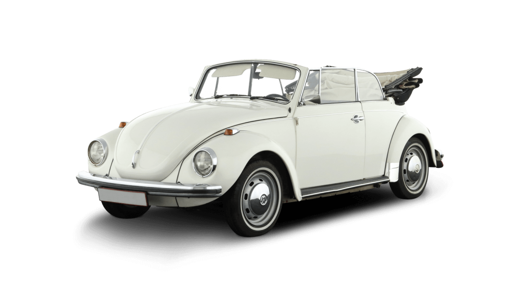
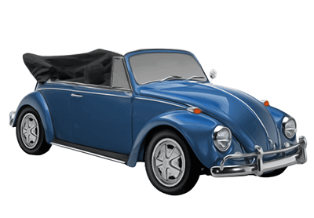
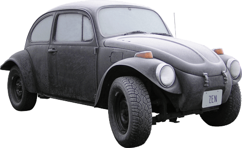
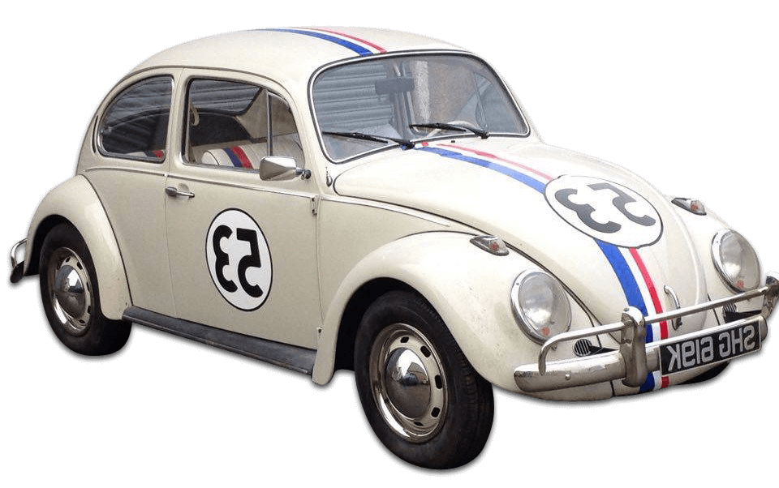

A Volkswagen Bogár számos változata és különféle modellje létezett az évtizedek során.
A standard bogár és a 4 leg jelentősebb azonban:
 A Bogár egyik ikonikus változata volt a kabrió verzió, amelynek teteje levehető volt. Ez a változat rendkívül népszerű volt azok körében, akik szerették a nyitott tetős élményt.
 Ez volt egy modernizált változat, amelyet az 1970-es években vezettek be. Ennek a modellnek a jellegzetessége volt az előre tolthető orr, amely jobb vezetési stabilitást és nagyobb csomagtartót biztosított.
 Ez egy olyan módosított Bogár volt, amelyet a terepjáró versenyekre terveztek. A Baja Bugokat általában megemelték, erősítették és terepjáró kiegészítőkkel látták el.
 A "Herbie" névre hallgató karakter egy személyiséggel felruházott Bogár volt, amely számos film és televíziós produkcióban szerepelt. Herbie az "Én, Pálcika" című filmekben vált világhírűvé, és az autó egyfajta kultikus státuszt szerzett a Bogár rajongók körében. Ennek a változatnak a megjelenése és stílusa is egyedi volt, és a filmes megjelenéseken keresztül vált ismertté és népszerűvé.